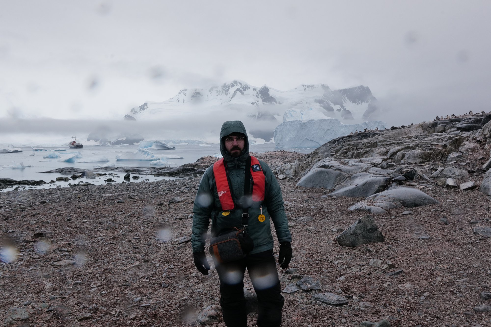

Born in 1997, I am an Italian journalist and photographer based in Rome.

About
Born in 1997, I am a journalist and photographer based in Rome. I hold an MA in International Relations from Sapienza University of Rome and a BA in Communication Studies from Roma Tre University.
© Edoardo Vezzi. All rights reserved.